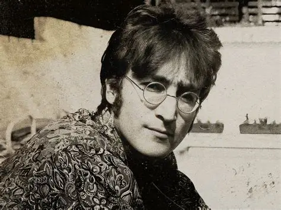

Pequena história dos Beatles e Queen
The Beatles
Os Beatles foram uma banda britânica formada em Liverpool, na Inglaterra, em 1960. Composta por John Lennon, Paul McCartney, George Harrison e Ringo Starr, revolucionou a música popular com canções inovadoras e enorme impacto cultural. Tornaram-se uma das bandas mais influentes e bem-sucedidas da história, deixando um legado que continua inspirando artistas até hoje.

Conheça um pouco mais sobre os Beatles:
Queen
O Queen foi formado em Londres, em 1970, pelos músicos Freddie Mercury, Brian May, Roger Taylor e John Deacon. A banda ficou famosa por misturar rock, ópera e elementos teatrais em suas músicas, criando sucessos como Bohemian Rhapsody e We Will Rock You. Graças ao talento de seus integrantes e às apresentações marcantes, o Queen tornou-se uma das maiores bandas de rock de todos os tempos.
.webp)
Conheça um pouco mais sobre o Queen:
Por que gosto deles
Gosto muito dessas duas bandas (Queen e Beatles), principalmente por seus artistas, os instrumentais são sensacionais e as letras muito bem escritas. Cada música tem seu significado próprio, não algo solto como em muitas músicas, e sempre toca em algo profundo. Dentre minhas músicas favoritas dos dois grupos, tenho como as principais, "Hey Jude", dos Beatles, e "Bohemian Rhapsody", do Queen.